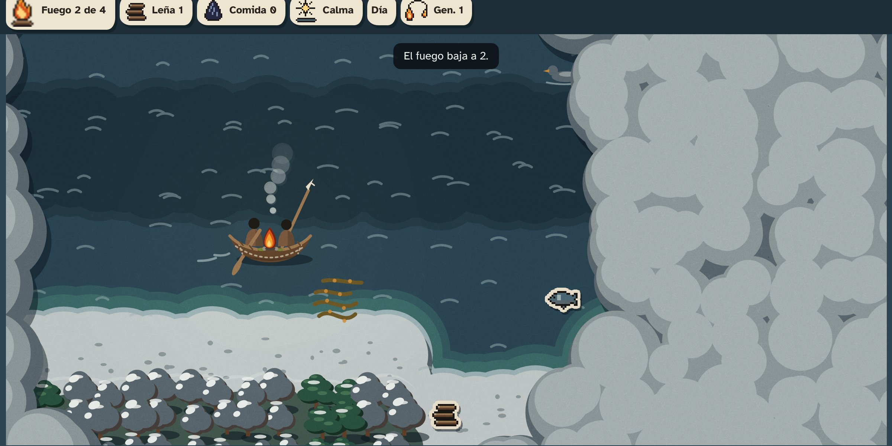
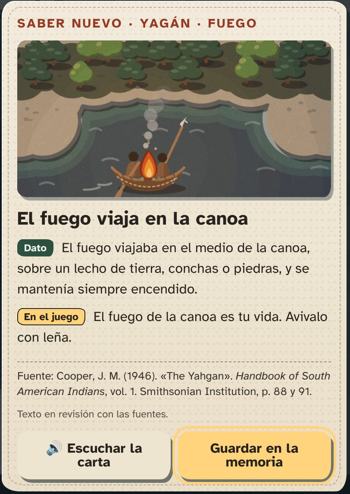

Hoja para la reunión del 14/11 (A4, dos páginas). Para imprimir y llevar. La primera página es para mostrar; la segunda tiene las preguntas, con espacio para anotar. El PDF está en equipo/reunion-14-11/hoja-A4.pdf.
Qué es. Un juego por turnos, para el navegador y el celular. Cada partida es un viaje en canoa por los canales, acompañando a una familia yagán. El fuego de la canoa es la vida: se gasta con el viento, la lluvia y la noche, y se mantiene con leña. Si se apaga, el viaje termina, pero lo aprendido pasa a la generación siguiente como cartas de saber.
Para qué. Para que chicos y escuelas conozcan saberes del pueblo yagán sobre el territorio, contados en presente. Hay una versión para imprimir y una guía para docentes.


Las fuentes que usamos son escritas y de afuera, sobre todo Cooper (1946), que reúne lo que escribieron viajeros, misioneros y etnógrafos. Queremos saber qué está bien, qué está mal y qué no debería estar.
Todo lo que nos digan se anota y se cambia. El repositorio es público: solo publicamos nombres o palabras con permiso.
¿Están de acuerdo con que el juego trate sobre su pueblo y su forma de vida?
¿Se puede jugar «como» una familia yagán, o prefieren que el juego la acompañe?
¿Por qué se movían las familias de un lugar a otro? ¿Cuál podría ser el destino del viaje? Tenemos tres opciones de Cooper (1946, p. 94-99): una ballena varada, corteza para canoas o piedras de fuego.
¿Hay algo que no debería aparecer en el juego?
¿Podemos mostrar personas como siluetas sin rasgos? ¿Cómo prefieren que se vean?
La fuente dice que la mujer remaba y manejaba la canoa, y el hombre iba adelante con el arpón (Cooper, 1946, p. 88 y 96). ¿Está bien mostrarlo así?
¿Hay colores, formas u objetos que no deberían aparecer? ¿Y alguno que falte?
¿Cómo quieren que se vea la pantalla final, la que cuenta el presente de la comunidad?
¿Podemos usar palabras en yagán (personajes, lugares, objetos)? ¿Cuáles?
El juego solo suena a viento, mar y fuego, sin música. ¿Hay sonidos que quieran compartir, o que no deberían usarse?
¿Podemos nombrarlo a usted y a la comunidad en el juego, el README y la presentación?
¿Podemos citar sus palabras?
¿Quiere ver el juego o las cartas antes de la entrega (17/11) o en la demo (19/11, Fábrica de Talento)?